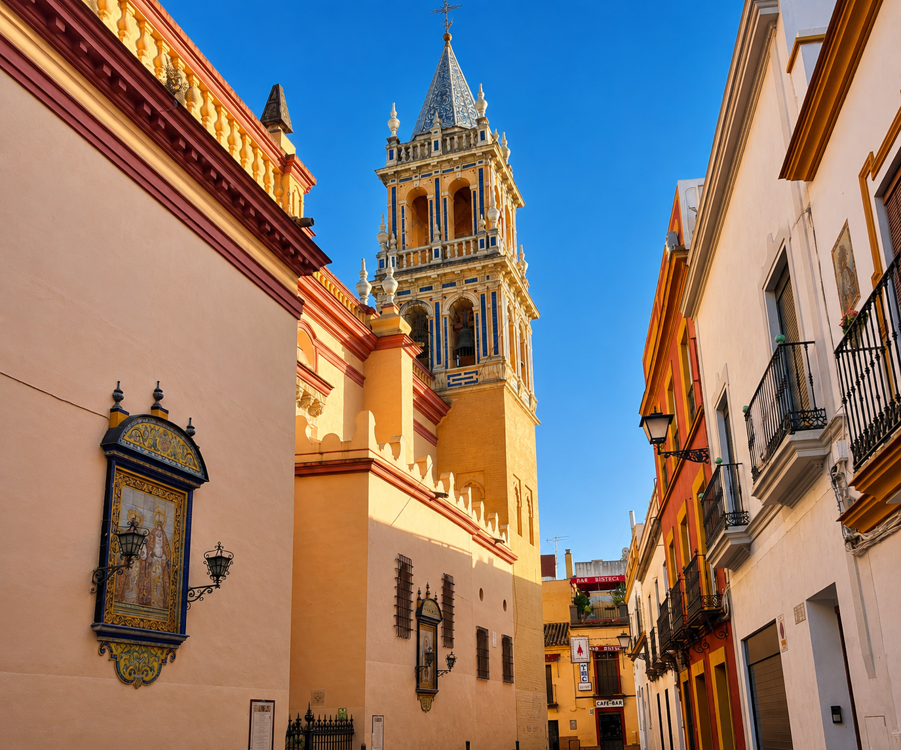
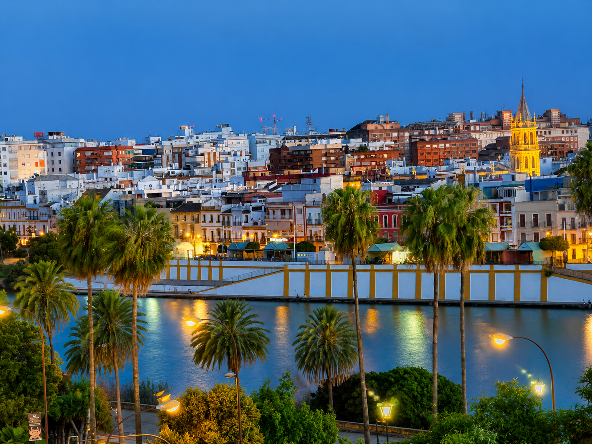

Triana er bydelen på vestsiden av elven Guadalquivir i Sevilla, kjent for keramikk, flamenco og en sterk egen identitet. Triana har lenge vært en stor ukjent for meg – den delen av Sevilla som jeg i altfor mange år ikke ga den oppmerksomheten den fortjener. Det angrer jeg på nå.
På den andre siden av broen
Triana ligger på den andre siden av Guadalquivir-elven, forbundet med resten av Sevilla via broer – og den geografiske separasjonen har alltid gitt bydelen sin egen identitet. Triana var extramuros – utenfor bymurene – og det var nettopp det som definerte hva slags folk som bodde her. Fiskere, keramikere, sjøfolk, flamenco-musikere. Og romfolket – gitanene – som gjorde Triana til et av flamencokulturens aller viktigste hjemsteder.
De som bor her kaller seg stolt trianeros – ikke sevillanos. Identiteten tilhører bydelen, ikke byen. Og det sier alt om hva slags sted Triana er.
«Triana tok meg altfor lang tid å oppdage ordentlig. Men da jeg først begynte å forstå hva som lå der – historien, dramatikken, sjelen – angret jeg på hvert eneste år jeg hadde oversett den.»

Carmen – da Triana ble verdensberømt
Selv de som aldri har satt foten i Triana kjenner til en av bydelens mest berømte innbyggere: Carmen. Protagonisten i Georges Bizets opera fra 1875 er ifølge historien fra Triana – en ung sigøynerkvinne, frilynt og livsglad, som jobber på sigarfabrikken og lever livet fullt og helt på egne premisser. Når du går gjennom Trianas gater og hører flamenco-rytmer fra en bar, kjenner du at Carmen ikke er helt oppdiktet likevel.
Torre de San Jorge – der inkvisisjonen holdt til i nesten 400 år
Her kommer den mørke siden av Trianas historie. Torre de San Jorge, det gamle Castillo de San Jorge, var hovedsetet for den spanske inkvisisjonen i Sevilla i nesten 400 år. Fra dette tårnet ble tusenvis av mennesker avhørt, fengslet og i mange tilfeller henrettet.
I dag er det et museum på stedet, og det er et av de mest rystende og viktigste stedene å besøke i Sevilla. Ikke fordi det er vakkert – men fordi det minner deg om at denne vakre byen også bærer på en tung og komplisert historie.
«Torre de San Jorge var i nesten 400 år inkvisisjonens hjerte i Sevilla. Det minner deg på at skjønnhet og grusomhet kan eksistere side om side – i samme by, i samme bydel, i samme gate.»
Keramikkens bydel
Men Triana er også noe mye mer lystig: det var Sevillas keramikk-hjerte. Her holdt håndverkerne til – alfarerne – som produserte de berømte azulejosene som i dag pryder vegger og gulv over hele verden. Keramikken ble ikke bare brukt lokalt, den ble eksportert til hele verden – til Latin-Amerika, til Europa, til kongelige palasser og store katedraler.
I dag kan du fremdeles finne håndverksbutikker og verksteder i Triana der tradisjonen holdes i live – med de samme teknikkene og de samme mønstrene som har kjennetegnet Triana-keramikken i hundrevis av år.
Santa Ana – katedralen som kom før katedralen
Iglesia de Santa Ana kalles Katedralen i Triana, og det er ikke bare et kallenavn. Santa Ana er Sevillas eldste kirke, bygget i 1266 etter ordre fra kong Alfonso X el Sabio – lenge før selve Katedralen i sentrum begynte å ta form. Det er noe rørende ved å stå inne i Santa Ana og tenke på det: Sevillas eldste kirke befinner seg rolig og litt oversett i Triana – akkurat som bydelen selv.
Mercado de Triana – bydelens nye hjerte
Hvis ett sted oppsummerer hva Triana er i dag, er det Mercado de Triana – regionens største kulinariske attraksjon. Inne i markedet finner du små matkiosker, tradisjonelle boder med fersk frukt, kjøtt og fisk, en kokkeskole der du kan lære å lage andalusisk mat, og et lite teater for kulturelle arrangementer.
Mercado de Triana er ikke bare et marked. Det er et levende kultursentrum midt i bydelen.

- Bydel på den andre siden av Guadalquivir – krysses via bro fra sentrum
- Innbyggerne kaller seg stolt trianeros – ikke sevillanos
- Hjemstedet til Carmen – protagonisten i Bizets berømte opera
- Torre de San Jorge – setet for inkvisisjonen i nesten 400 år, nå museum
- Historisk sentrum for keramikkproduksjon – azulejos eksportert verden over
- Iglesia de Santa Ana – Sevillas eldste kirke, bygget i 1266
- Mercado de Triana – kulinarisk attraksjon med kokkeskole og teater
Ofte stilte spørsmål
Iglesia de Santa Ana er Sevillas eldste kirke, bygget i 1266 på ordre fra kong Alfonso X el Sabio, og kalles «Katedralen i Triana».
Et marked med matkiosker og tradisjonelle boder, pluss en kokkeskole og et lite teater for kulturelle arrangementer.
Trianeros er det lokale navnet på folk fra Triana-bydelen, kjent for en sterk egen identitet på den andre siden av elven fra sentrum.